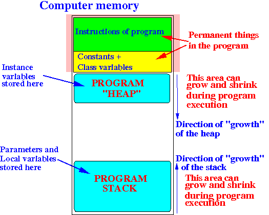
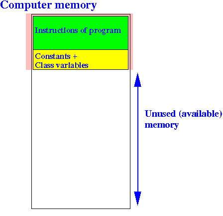
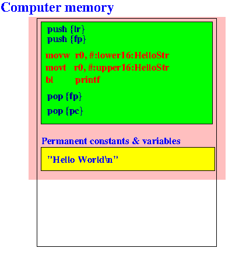

- In CS170, you may have
seen the famous
"Hello World" program in
Java:
public class Hello { public static void main(String[] args) { System.out.println("Hello World"); } }
- Here is the Hello World program
written in ARM assembler code:
// // hello.s: hello world in ARM assembler // // How to compile: // // as -o hello.o hello.s // gcc -o hello hello.o // .global main // ************************ Starting variable definition ***************** .data // *********************************************************************** HelloStr: // Label marking this location in memory .asciz "Hello World\n" // ASCII codes for the string // ************************ Starting computer instruction **************** .text // *********************************************************************** main: push {lr} // Save the return address on the stack push {fp} // Save the frame pointer on the stack // Explained later in CS255 /* ---------------------------------------- Pass the string to printf function ---------------------------------------- */ movw r0, #:lower16:HelloStr movt r0, #:upper16:HelloStr /* ---------------------------------------- Call the printf function ---------------------------------------- */ bl printf // Call printf function with input string pop {fp} // Pop the frame pointer pop {pc} // Pop the return address into PC // Explained later in CS255 .end Any text that follws ".end" is ignored (treated as comment)
- In order to compile and
run this
ARM assembler program, you
need a computer with an
ARM processor
- We have a machine called cs255host1 in the CS department that is running on an ARM processor to support this course
- Example Program:
(Demo above code)

- Prog file: /home/cs255/cs255/hello/hello.s on cs255host1
How to run the program:
ssh -X cs255@cs255host1 (passwd: abc123) cd /home/cs255/cs255/hello as -o hello.o hello.s gcc -o hello hello.o helloOutput:
cs255@cs255host1(314)> hello Hello World
- Recall how a
computer program is
organized (stored) inside
the computer memory:
 (See: click here )
- When a program begins execution,
the heap and stack area are
empty; and
you only find these program parts in the memory:
 Notice that the assembler program contain the key words:
.text - this keyword announces that program instructions will follow .data - this keyword announces that constant and variables will followThe instructions that follows the keyword .text will be stored in the program section (green area)
The data and variable definitions that follows the keyword .data will be stored in the class variable section (yellow area)
- There is only
one statement in the
Java "Hello World" program:
System.out.println("Hello World");This statement is a method (function) call statement where:
- The function is println
- The parameter of the function is the string "Hello World"
- The program instruction section in
the assembler program is:
// ************************ Starting computer instruction **************** .text // *********************************************************************** main: push {lr} // Save the return address on the stack push {fp} // Save the frame pointer on the stack // Explained later in CS255 /* ---------------------------------------- Pass the string to printf function ---------------------------------------- */ movw r0, #:lower16:HelloStr movt r0, #:upper16:HelloStr /* ---------------------------------------- Call the printf function ---------------------------------------- */ bl printf // Call printf function with input string pop {fp} // Pop the frame pointer pop {lr} // Pop the return address // Explained later in CS255I will skip the push and pop instructions - this is advanced material in assembler programming that will be explained later in CS255.
The main: identifier (called: label in assembler programming) corresponds to the location of the start of the program.
- Every assembler program starts executing at the main: location.
The program instruction in the Hello World program consists of the following 3 (assembler) instructions (given in red in the diagram below):
/* ---------------------------------------- Pass the string to printf function ---------------------------------------- */ movw r0, #:lower16:HelloStr movt r0, #:upper16:HelloStr /* ---------------------------------------- Call the printf function ---------------------------------------- */ bl printf // Call printf function with input stringThe first 2 instruction passes the parameter HelloStr to the function (= method)
The last instruction calls the function (method) printf (which is the same as println in java).
- Fact:
- When you write an assembler program,
you must
use the registers
in the processor
For example: you can see this assembler instruction in the "Hello World" program:
movw r0, #:lower16:HelloStrThe notation r0 is the name of a specific register of the ARM processor
We call assembler programming: low level programming because an assembler programmer must know every detail of the computer processor in order to write the program.
In contrast: Java (and C) is a high level programming language where the programmer does not need to know the details of the computer processor !!!
- When you write an assembler program,
you must
use the registers
in the processor
- When you look at the
Java "Hello World" program:
public class Hello { public static void main(String[] args) { System.out.println("Hello World"); } }you may think that there are no constants defined in the program.
That's wrong, because:
"Hello World" is a String constant !!!
- Correspondingly, the
.data section
of the assembler program contains
the defining of a
string constant expressed
as follows:
// ************************ Starting variable definition ***************** .data // *********************************************************************** HelloStr: // Label marking this location in memory .asciz "Hello World\n" // ASCII codes for the stringThe string constant is defined using the syntax:
.asciz "Hello World\n"The identifier HelloStr: (called "label" in assembler programming - later) is used to mark the memory location where this string constant is stored.
- According to this organization:
The program instructions and String constant are stored inside the computer memory as follows:
 Without a suitable tool, I cannot show you the internal organization of the program
- We have develop a
special teaching tool for
CS255 assembler instruction called:
EGTAPI
This tool is design to:
- Reveal all the secrets of
programming features
in
high level languages
(i.e.: show you
how are these
features
implemented in
assembler)
- Run assmbler programs
without using a real computer
(We run the assembler program using an emulator.
This feature will allow the CS lab machines to run ARM assembler programs -- so we don't need another computer lab to support CS255 projects)
I will use EGTAPI to show you the program organization in the next webpage
- Reveal all the secrets of
programming features
in
high level languages
(i.e.: show you
how are these
features
implemented in
assembler)